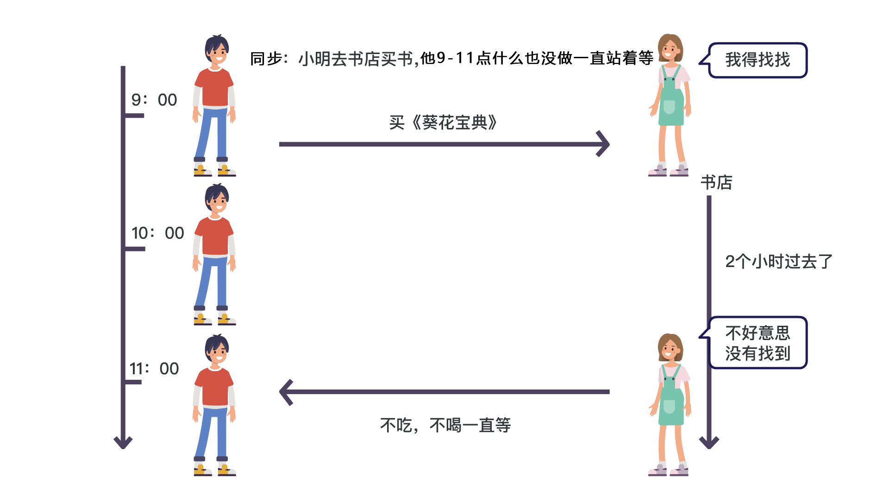
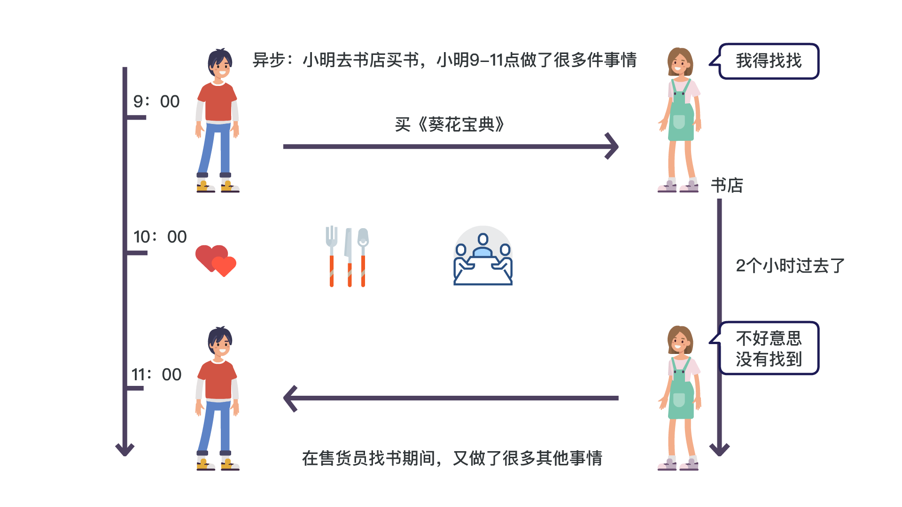

<!DOCTYPE lake>
<p data-lake-id="u812fa62c" id="u812fa62c"><br/></p><p data-lake-id="ub1cda5d0" id="ub1cda5d0"><strong><span data-lake-id="u853edc78" id="u853edc78" style="color: rgba(0, 0, 0, 0.87)">同步（Synchronous）</span></strong><span data-lake-id="u5b19994a" id="u5b19994a" style="color: rgba(0, 0, 0, 0.87)">： </span><span data-lake-id="u10bd0b53" id="u10bd0b53" style="color: rgb(55, 71, 79)">多个任务之间执行的时候要求有先后顺序，必须一个先执行完成之后，另一个才能继续执行</span><span data-lake-id="ud3270a10" id="ud3270a10" style="color: rgba(0, 0, 0, 0.87)">， 只有一个主线。如:你说完，我再说（同一时间只能做一件事情）</span></p><p data-lake-id="u89635c72" id="u89635c72"><span data-lake-id="u05304052" id="u05304052" style="color: rgba(0, 0, 0, 0.87)">​</span><br/></p><p data-lake-id="u7c4553c4" id="u7c4553c4"><strong><span data-lake-id="u13bf1989" id="u13bf1989" style="color: rgba(0, 0, 0, 0.87)">异步（Asynchronous）</span></strong><span data-lake-id="u37ab7569" id="u37ab7569" style="color: rgba(0, 0, 0, 0.87)">：</span><span data-lake-id="u8d7e2379" id="u8d7e2379" style="color: rgb(55, 71, 79)">多个任务之间执行没有先后顺序，可以同时运行，执行的先后顺序不会有什么影响</span><span data-lake-id="u3eb9cab9" id="u3eb9cab9" style="color: rgba(0, 0, 0, 0.87)">，存在的多条运行主线。如：发微信（可以不用等对方回复，继续发）、点外卖（点了外卖后，可以继续忙其他的事情，而不是坐等外卖，啥也不做）</span></p><p data-lake-id="ue948e1c1" id="ue948e1c1"></p><p data-lake-id="u4c9a4732" id="u4c9a4732"></p><p data-lake-id="uc0efed81" id="uc0efed81"><br/></p>